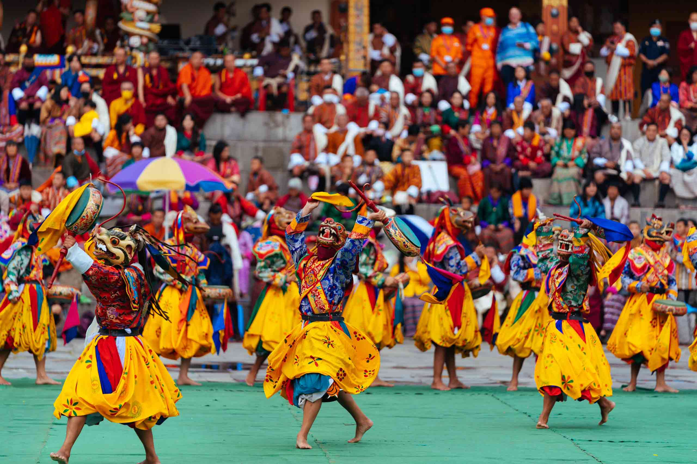

Across Bhutan's dzongs and monasteries, a Tshechu — literally "tenth day," the date on the lunar calendar most take their name from — draws entire valleys together for days of masked cham dances, blessing rituals and, for many families, the one time of year everyone gathers in their finest woven kira and gho. These aren't staged for visitors: they're living religious observances Bhutanese communities have kept for centuries, and timing a journey around one is one of the most direct ways to see Bhutan's spiritual life in motion rather than from behind glass.


Over several days, monks and laypeople alike perform a sequence of cham — elaborate masked dances retelling stories from Bhutanese Buddhism, each mask and gesture carrying its own meaning, accompanied by long horns, cymbals and drums. Locals believe simply witnessing certain dances confers a blessing, which is part of why entire families travel from outlying villages to attend.
Most Tshechus close with the predawn unveiling of a thongdrel — a monumental appliqué thangka, often several stories tall, said to cleanse the sins of anyone who sees it. It's displayed for only a few hours before being rolled away again until the following year.
Enquire About A Festival Date→
Bhutan's most photographed festival — five days of cham at Rinpung Dzong, closing with the predawn unveiling of the Guru Thongdrel against the Paro valley's spring light.
Enquire About This Festival→
Bhutan's largest festival, held in the capital itself — the easiest Tshechu to build a first Bhutan trip around, with three days of dance in the Tashichho Dzong courtyard.
Enquire About This Festival→
A dramatic re-enactment of a 17th-century battle against Tibetan invaders, staged by a costumed "militia" on the grounds of Punakha Dzong, followed immediately by a classical Tshechu.
Enquire About This Festival→
Held at one of Bhutan's oldest temples in Bumthang, famous for its midnight "fire blessing" ceremony — dancers circling a bonfire beneath a sacred naked dance said to grant fertility.
Enquire About This Festival→
Held in the Phobjikha valley the same week the endangered black-necked cranes arrive from the Tibetan plateau — school dances and folk performances celebrating the bird's return, a rare crossover of culture and wildlife.
Enquire About This Festival→
A quieter alternative to Thimphu's crowds, held around the same week — the Gangtey Goenpa setting, high above the Phobjikha valley, makes this one of the most scenic Tshechus to attend.
Enquire About This Festival→Bhutan's festival dates follow the lunar calendar and shift every year, so the same Tshechu can fall on different dates from one year to the next. Download our tentative 2026 festival calendar to start shaping your dates, then send us an enquiry to confirm and build a private itinerary around it.
Download 2026 Festival Dates (PDF)Dates are tentative and confirmed closer to each year by Bhutan's religious calendar — we reconfirm exact dates with you again at the time of booking.
Tell us which festival calls to you, and our team will shape a private Bhutan journey around its dates — no templates, no packages.